Einrichtung, Bedienung und jede Einstellung erklärt – inklusive der DNS-Einrichtung in UniFi.
Bevor ein Gerät eine Webseite, eine App oder einen Werbebanner lädt, fragt es nach der Adresse: „Welche IP hat doubleclick.net?“ Diese Frage heißt DNS-Anfrage. FAH-Adblock beantwortet sie für alle Geräte im Heimnetz und im VPN – und steht damit wie eine Wand zwischen Heimnetz und Internet:
0.0.0.0). Werbung, Tracker und Schadsoftware laden gar nicht erst – auf jedem Gerät, ohne App oder Browser-Erweiterung.example.org, Gerätenamen) fragt FAH-Adblock beim UniFi-Gateway nach – ungefiltert.FAH-Adblock sperrt ganze Domains. Werbung, die von derselben Domain kommt wie der eigentliche Inhalt, lässt sich so nicht trennen – etwa Werbung in YouTube-Videos, Instagram- oder Facebook-Beiträgen. Dafür wirkt der Schutz auf jedem Gerät: Fernseher, Konsole, Handy-Apps, Drucker.
Jedes Gerät bekommt von UniFi zwei DNS-Server: zuerst FAH-Adblock (192.168.1.23), danach das Gateway (192.168.1.1). Antwortet das NAS nicht, fragen die Geräte automatisch das Gateway. Das Internet läuft also weiter – nur eben ungefiltert, bis das NAS wieder läuft.
Manche Geräte (vor allem Android-Handys) fragen den zweiten DNS-Server auch dann, wenn der erste funktioniert – diese Anfragen laufen ungefiltert am Blocker vorbei. Bei Erwachsenen-Geräten rutscht dadurch vereinzelt Werbung durch. Bei Kindergeräten ist das eine Lücke im Jugendschutz; dafür gibt es eine eigene Firewall-Regel (Kapitel 3, Schritt 7). Wer gar keine Umgehung möchte, trägt in UniFi nur 192.168.1.23 ein – fällt das NAS dann aus, geht im ganzen Heimnetz kein Internet mehr.
Die vollständige Reihenfolge steht im Anhang.
| Was | Wert | Hinweis |
|---|---|---|
| Weboberfläche | http://192.168.1.23:8053 | nur aus Heimnetz und VPN erreichbar |
| DNS-Server | 192.168.1.23 : 53 | UDP und TCP |
| Rückfall-DNS | 192.168.1.1 | UniFi-Gateway (DNS 2) |
| Anmeldung | Name admin | Startpasswort admin – sofort ändern |
| Gefilterte Netze | 192.168.1.0/24 192.168.5.0/24 | Homelab WireGuard-VPN |
| Verschlüsselt nach außen | Quad9, Rückfall Cloudflare | DNS-over-HTTPS |
| Speicherort NAS | /volume3/docker/fah-adblock | Daten in data/ |
http://192.168.1.23:8053 öffnen (von unterwegs vorher WireGuard einschalten).Nach 10 falschen Passwörtern sperrt FAH-Adblock weitere Versuche von diesem Gerät für 15 Minuten.
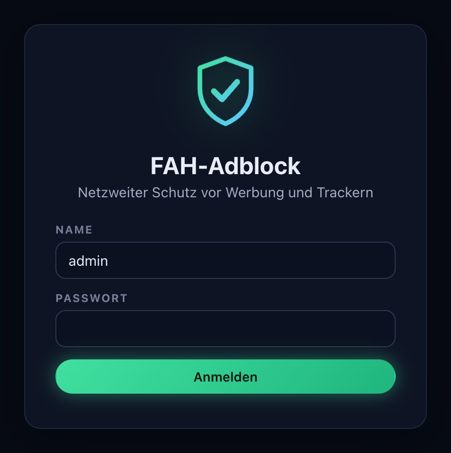
Damit Geräte FAH-Adblock nutzen, muss UniFi ihnen die NAS-Adresse als DNS-Server mitteilen. Das passiert automatisch per DHCP – an den Geräten selbst ist normalerweise nichts einzustellen.
Die Beschriftungen unterscheiden sich je nach UniFi-Network-Version und Sprache leicht. In Klammern steht jeweils die englische Bezeichnung.
| Stelle in UniFi | Einstellung | Warum |
|---|---|---|
| Netzwerk „Homelab“ – DHCP | DNS 192.168.1.23 – nur dieser eine | Alle Geräte im Heimnetz fragen ausschließlich FAH-Adblock. Kein zweiter Eintrag (siehe Kasten unten). |
| Netzwerk „IOT“ – DHCP | DNS 192.168.1.23 – nur dieser eine | Auch Fernseher, Steckdosen, Kameras werden gefiltert. |
| Netzwerk „Gast“ – DHCP | Automatisch (Gateway) | Gäste sind isoliert und erreichen das NAS nicht; sie laufen ungefiltert über das Gateway. |
| VPN-Server (WireGuard) | DNS 1 192.168.1.23DNS 2 192.168.1.1Serveradresse example.org | Unterwegs per VPN gefiltert. Der zweite Eintrag bleibt bewusst (eigene Geräte, kein Kinderprofil); die Serveradresse als Hostname statt WAN-IP übersteht einen Adresswechsel bei Vodafone. |
| Internet (WAN) – DNS-Server | Automatisch | Das Gateway selbst fragt Vodafone. Der Blocker als Gateway-Upstream bringt nichts (siehe Kasten). |
| Inhaltsfilterung | alle Filter gelöscht („Fabian“, „Gäste“, „Kinder“) | Werbung und Kinderschutz regelt FAH-Adblock – doppelt gefiltert verwirrt nur. |
| Firewall-Richtlinien | „FAH-Adblock: DNS nur über NAS (Homelab)“ „FAH-Adblock: DNS nur über NAS (VPN)“ | Geräte mit fest eingetragenen DNS-Servern (8.8.8.8, 1.1.1.1 …) können FAH-Adblock nicht mehr umgehen. |
| Lokale DNS-Einträge | example.org → 192.168.1.23*.example.org → 192.168.1.23 | FAH-Adblock fragt dafür das Gateway. Seit 17.09. ist auch der Wildcard aktiv: Alle Unterdomains (nextcloud., plex., ntfy. …) werden im Haus direkt auf das NAS aufgelöst statt über die öffentliche Adresse. |
Ein zweiter DNS-Server als „Reserve“ ist keine Reserve, sondern eine Dauerabkürzung: Android, Windows und die meisten IoT-Geräte fragen beide Server abwechselnd oder den schnelleren – nicht erst bei Ausfall. Im IoT-Netz kamen so nur 68 Anfragen am Tag beim Blocker an, der Rest lief ungefiltert über das Gateway. Der Versuch, das Gateway seinerseits auf den Blocker zu lenken (WAN-DNS 192.168.1.23 + Reserve), scheitert am Gateway-Resolver: Er nimmt den schnellsten Upstream, nicht den ersten – Messung: 0 von 12 Werbedomains geblockt. Deshalb: ein DNS-Server. Preis: Startet das NAS neu, gibt es einige Minuten keine Namensauflösung (ein Container-Update dauert ~10 Sekunden; Browser und Apps puffern Namen).
192.168.1.23 · DNS-Server 2: leer lassen.Geräte übernehmen den neuen DNS-Server erst, wenn sie ihre Adresse erneuern: beim Neuverbinden mit dem WLAN, nach einem Neustart oder spätestens nach Ablauf der halben DHCP-Lease-Zeit (bei 24 h Lease also nach etwa 12 Stunden). Wie man das beschleunigt, steht in Schritt 4.
192.168.1.23 eintragen (ein zweiter Eintrag ist hier vertretbar, weil VPN-Clients die eigenen Geräte sind). Als Serveradresse den DDNS-Hostnamen example.org wählen, nicht die WAN-IP. Speichern.192.168.1.23, 192.168.1.1 setzen (bisher 192.168.5.1).[Interface] PrivateKey = … (unverändert lassen) Address = 192.168.5.2/32 DNS = 192.168.1.23, 192.168.1.1
UniFi hat eigene, einfache Filter (Werbung, Familie). Neben FAH-Adblock führen sie zu doppelten Sperren, die in FAH-Adblock weder sichtbar sind noch per Rettung freigegeben werden können. Außerdem fängt ein aktiver UniFi-Filter die DNS-Anfragen seiner Geräte selbst ab – vorbei an FAH-Adblock und an der Firewall-Regel aus Schritt 6. Deshalb sind alle UniFi-Filter gelöscht.
Nur die Kategorie Familie – kein SafeSearch, keine eigenen Listen. Das Profil „Kinder“ in FAH-Adblock deckt das ab und sperrt zusätzlich Glücksspiel und abends Social Media. Die 8 Geräte des UniFi-Filters haben das FAH-Profil „Kinder“ bekommen. Die UniFi-Firewall-Regeln „Kids Weekend“/„Kids Workingdays“ (Internet-Sperrzeiten) sind davon unberührt.
Am schnellsten geht es, wenn sich die Geräte neu verbinden:
| Gerät | So übernimmt es den neuen DNS |
|---|---|
| WLAN-Geräte allgemein | WLAN kurz aus- und einschalten. In UniFi unter Clients → Gerät → Neu verbinden (Reconnect) geht es auch aus der Ferne. |
| Fernseher, Konsole, Drucker | In UniFi „Neu verbinden“ oder Gerät kurz vom Strom nehmen. |
| Windows-PC | Eingabeaufforderung: ipconfig /renew |
| Mac | WLAN aus/ein oder Systemeinstellungen › Netzwerk › Details › TCP/IP › DHCP-Lease erneuern |
| iPhone / iPad | WLAN aus/ein oder WLAN › (i) › Lease erneuern |
| Kabelgeräte | Netzwerkkabel kurz ziehen oder Gerät neu starten. |
nslookup doubleclick.net → Server: 192.168.1.23 Address: 0.0.0.0 (= geblockt, alles richtig)
Manche Geräte und Apps ignorieren den DNS-Server von UniFi und fragen fest eingestellte Server wie 8.8.8.8 oder 1.1.1.1 (im Heimnetz aufgefallen: Gast-tab, Uwe Smartphone, Drucker). Zwei Firewall-Richtlinien sperren das – die Geräte weichen dann von selbst auf FAH-Adblock aus:
| Feld | Homelab | VPN |
|---|---|---|
| Name | FAH-Adblock: DNS nur über NAS (Homelab) | FAH-Adblock: DNS nur über NAS (VPN) |
| Aktion | Blockieren (Block) | Blockieren (Block) |
| Quelle | Zone Homelab, IP 192.168.1.23 mit „Gegenteil“ (Match Opposite) = alle außer dem NAS | Zone VPN, beliebig |
| Ziel | Zone External, beliebig, Port 53 | Zone External, beliebig, Port 53 |
| Protokoll | TCP und UDP | TCP und UDP |
| IP-Version | IPv4 | IPv4 und IPv6 |
Test am Mac oder PC: nslookup example.com 8.8.8.8 läuft ins Leere (gewollt), nslookup example.com 192.168.1.23 antwortet.
Die früher hier beschriebene Zusatzregel „Kindergeräte nur DNS über NAS“ ist nicht mehr nötig: Seit das Homelab-Netz nur noch einen DNS-Server verteilt, gibt es für Kindergeräte keinen Umweg über das Gateway mehr. Der Vollständigkeit halber die alte Idee:
Android-Handys fragen oft den zweiten DNS-Server (das Gateway) – ungefiltert. Für Kindergeräte schließt eine weitere Richtlinie diese Lücke:
| Feld | Wert |
|---|---|
| Name | FAH-Adblock: Kindergeräte nur DNS über NAS |
| Aktion | Blockieren |
| Quelle | Zone Homelab, Clients: alle Geräte mit FAH-Profil „Kinder“ (Nintendo Switch, Gast Smartphone NEU/ALT, Gast-tab, papa-Lenovo …) |
| Ziel | Zone Gateway, Port 53, TCP und UDP |
Diese Regel ist noch nicht aktiv. Nebenwirkung: Fällt das NAS aus, haben nur die Kindergeräte kein Internet (Erwachsene weichen weiter auf das Gateway aus). Bei neuen Kindergeräten muss die Geräteliste der Regel ergänzt werden.
Dann fragt es FAH-Adblock nicht. Die häufigsten Gründe:
| Ursache | Lösung |
|---|---|
| Alte DHCP-Lease | Gerät neu verbinden (Kapitel 3, Schritt 4). Typisch: Das Gerät fragt nur das Gateway. |
| DNS von Hand eingetragen |
Mac: Systemeinstellungen › Netzwerk › WLAN/Ethernet › Details › DNS – alle Einträge mit „–“ entfernen (bei WLAN und Kabel jeweils prüfen). iPhone: WLAN › (i) › DNS konfigurieren → Automatisch. Windows: Netzwerkadapter › IPv4 › Eigenschaften → „DNS-Serveradresse automatisch beziehen“. Android: Einstellungen › Netzwerk › Privates DNS → Aus bzw. Automatisch (ein eingetragener Anbieter umgeht FAH-Adblock). |
| Sicheres DNS im Browser | Chrome/Edge: Einstellungen › Datenschutz › Sicherheit › Sicheres DNS auf „Aktuellen Dienstanbieter verwenden“. Firefox erkennt FAH-Adblock selbst und schaltet sein eigenes DNS ab (Prüf-Domain use-application-dns.net). |
| iCloud Privat-Relay | Safari-Anfragen laufen dann über Apple. Pro WLAN abschaltbar: WLAN › (i) › IP-Adresse verbergen / Privat-Relay. |
| Fremdes Netz | Nur 192.168.1.0/24 und 192.168.5.0/24 dürfen fragen. Weitere Netze unter Einstellungen → Netz → Erlaubte Netze. |
Das NAS nutzt bewusst eigene, feste DNS-Server und nicht FAH-Adblock – deshalb ist es von der Firewall-Sperre ausgenommen. So startet es auch dann sauber, wenn FAH-Adblock gerade aktualisiert wird. Für seine eigenen Verbindungen (Blocklisten laden, verschlüsseltes DNS) löst FAH-Adblock Namen selbst auf – ein Henne-Ei-Problem gibt es nicht.
192.168.5.1.inhaltsfilter-vorher.json)../manage.sh stop.Die UniFi-Einstellungen vor und nach der Umstellung liegen gesichert unter ~/claude/homepage/unifi-sicherung/adblock-2026-09-15/.
Die Startseite zeigt live, was im Netz passiert.
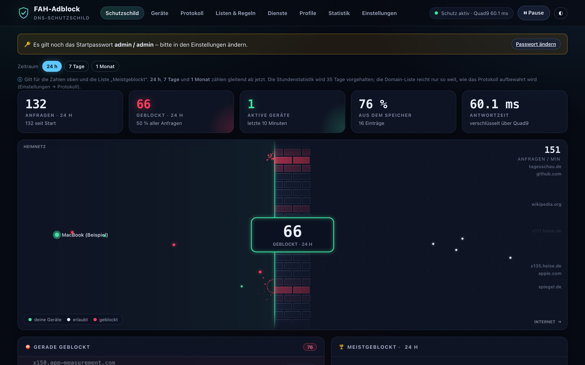
Über den Kennzahlen sitzt der Schalter Zeitraum. Er gilt für die Zahlen oben, die Plakette in der Wand und die Liste „Meistgeblockt“. Alle drei Zeiträume zählen gleitend ab jetzt. Der gewählte Knopf ist blau hervorgehoben; die Wahl merkt sich der Browser.
Die Stundenstatistik (Anfragen, geblockt, Quote) wird 35 Tage vorgehalten – die Zahlen für 7 Tage und 1 Monat stimmen also auch rückwirkend. Die Domain-Liste „Meistgeblockt“ reicht nur so weit, wie das Protokoll aufbewahrt wird (Einstellungen → Netz → Protokoll aufbewahren, Standard 7 Tage); bei längerem Zeitraum steht ein Hinweis unter der Liste.
Die Kennzahlen laufen von selbst mit (alle 20 Sekunden), ein Neuladen der Seite ist nicht nötig.
| Kachel | Bedeutung |
|---|---|
| Anfragen · Zeitraum | Alle DNS-Anfragen im gewählten Zeitraum; darunter die Anfragen seit dem letzten Start. |
| Geblockt · Zeitraum | Geblockte Anfragen und ihr Anteil in Prozent. |
| Aktive Geräte | Geräte mit Anfragen in den letzten 10 Minuten. |
| Aus dem Speicher | Anteil der Antworten aus dem Zwischenspeicher – je höher, desto schneller. |
| Antwortzeit | Letzte Antwortzeit des verschlüsselten Anbieters (z. B. Quad9). |
Unter der Wand stehen die zuletzt geblockten Domains mit Gerät, Uhrzeit und Liste sowie die am häufigsten geblockten Domains im gewählten Zeitraum. Unter jeder Domain steht, was sie ist: Anbieter, wofür sie dient und ob eine Sperre Nebenwirkungen haben kann (⚠). Unbekannte Domains lassen sich per Link im Web nachschlagen. Ein Klick auf Freigeben öffnet die Freigabe-Auswahl (Kapitel 6).
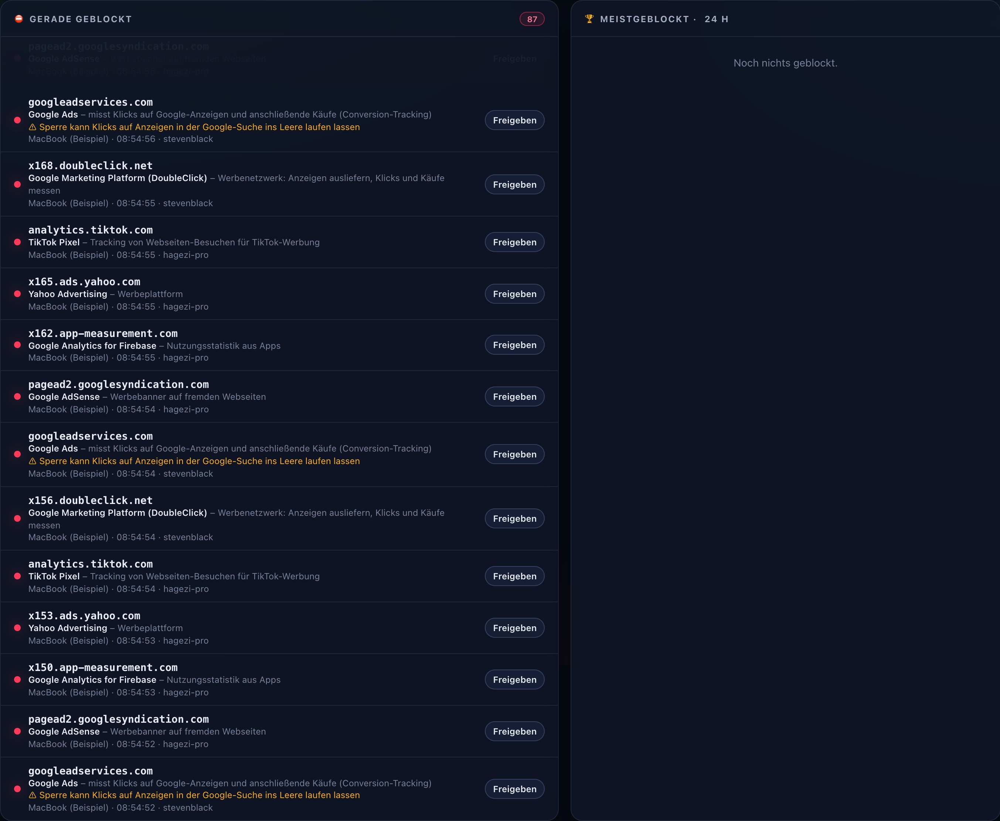
Oben rechts sitzt der Knopf Pause. Er schaltet den Filter für alle Geräte für 5 Minuten, 15 Minuten oder 1 Stunde ab. Danach schaltet sich der Schutz von selbst wieder ein; „Schutz wieder einschalten“ beendet die Pause sofort. Die Anzeige neben dem Knopf zeigt den Zustand: Schutz aktiv mit dem verschlüsselten Anbieter und dessen Antwortzeit, während einer Pause pausiert bis ….
Geht nur auf einem Gerät etwas nicht, besser dort die Rettung oder die Pause je Gerät nutzen – dann bleiben alle anderen geschützt.
Mit dem Halbmond-Knopf daneben wechselt die Oberfläche zwischen dunklem und hellem Design. Auf dem Handy liegt die Navigation unten.
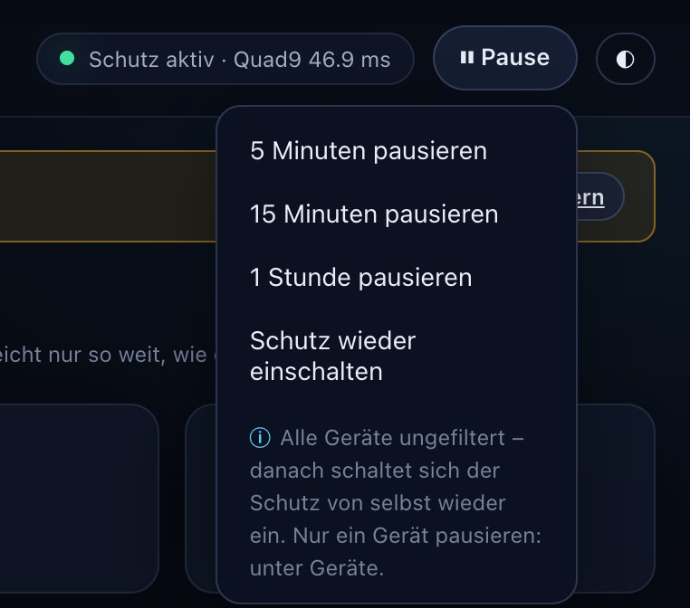
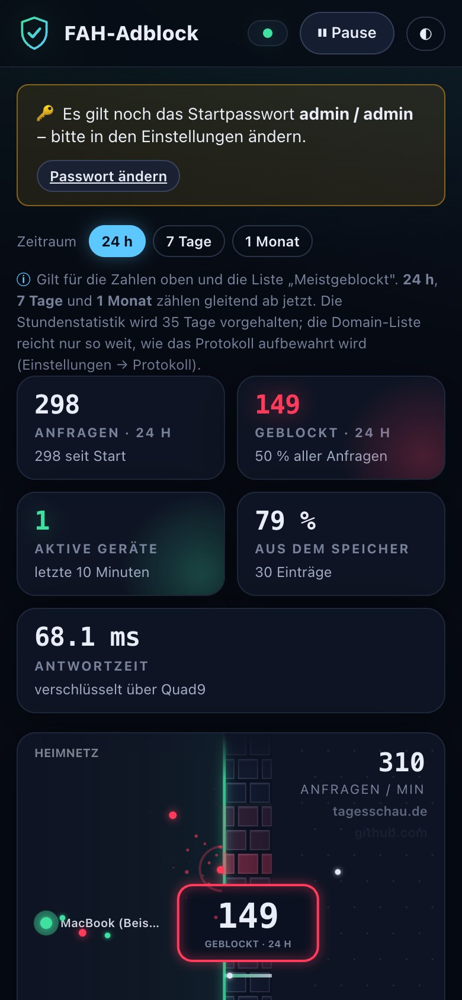
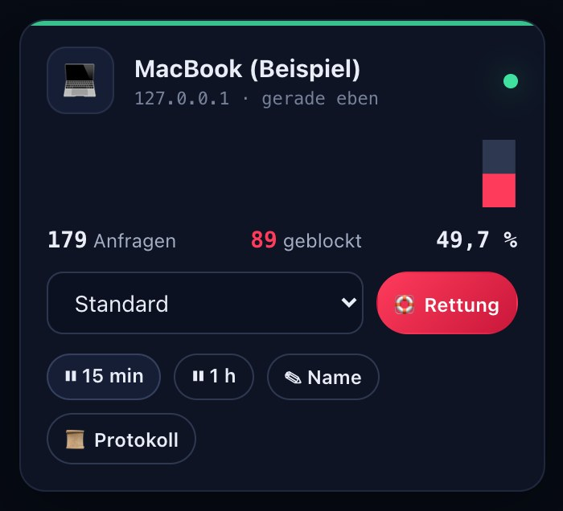
Jedes Gerät, das FAH-Adblock nutzt, bekommt eine Karte. Name und Gerätesymbol liefert UniFi – auch für Geräte, die gerade offline sind. Die Symbole lädt FAH-Adblock einmal von Ubiquiti und speichert sie auf dem NAS; gibt es keins, erscheint ein passendes Emoji. Hat ein Gerät dort keinen Namen, steht der Hersteller da („Gerät von …“) oder „Gerät mit privater MAC“ (zufällige MAC-Adresse von Handys oder virtuelle Maschinen); mit ✎ lässt sich ein eigener Name vergeben. Geräte, die mit einem Profil eingetragen sind, aber noch nicht gefragt haben, erscheinen mit „nie“. Profile hängen an der MAC-Adresse und bleiben erhalten, wenn ein Gerät eine neue IP bekommt.
| Element | Was es macht |
|---|---|
| Zahlen | Anfragen, geblockte Anfragen und Anteil der letzten 24 h; die Kurve zeigt die letzten 12 h. |
| Grüner Punkt | Gerät war in den letzten 10 Minuten aktiv. |
| Profil-Auswahl | Welche Kategorien für dieses Gerät gesperrt sind – wirkt sofort. |
| ⏸ 15 min / 1 h | Nur dieses Gerät ungefiltert, alle anderen bleiben geschützt. „▶ Schutz an“ beendet die Pause. |
| ✎ Name | Eigenen Anzeigenamen vergeben (überschreibt den Namen aus UniFi). |
| 📜 Protokoll | Öffnet das Protokoll, gefiltert auf dieses Gerät. |
| 🛟 Rettung | Zeigt, was bei diesem Gerät zuletzt geblockt wurde – mit Ein-Klick-Freigabe. |
Alternativ ⏸ Gerät 15 min pausieren: Geht es dann, liegt es am Blocker, und die Rettungsliste zeigt den Übeltäter.
Die Beschreibung hilft: Domains mit ⚠-Hinweis („Sperre kann … stören“) sind die ersten Kandidaten. Reine Werbe- und Statistikdienste sind selten die Ursache.
Alle Freigaben aus der Rettung landen unter Listen & Regeln → Eigene Regeln und lassen sich dort wieder entfernen.
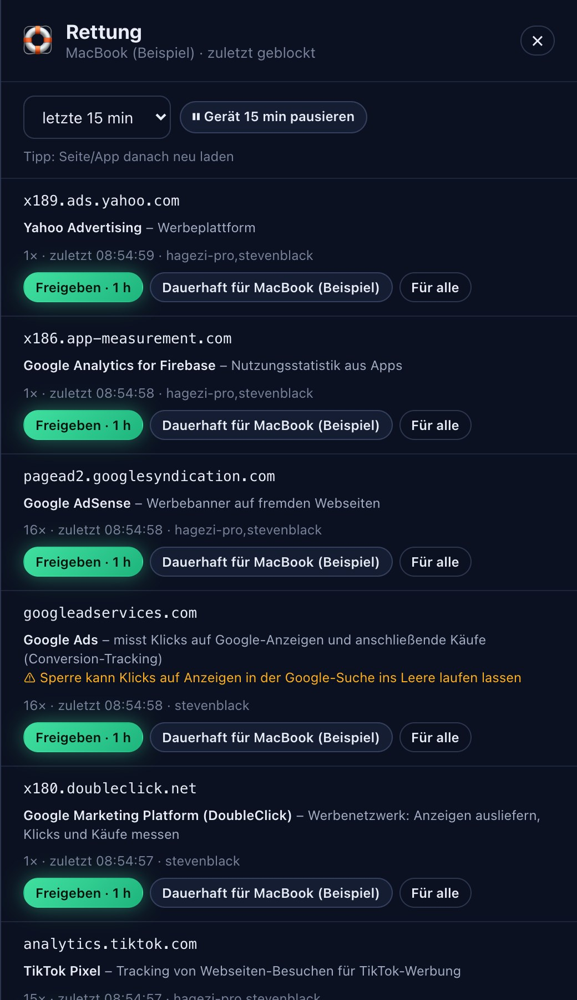
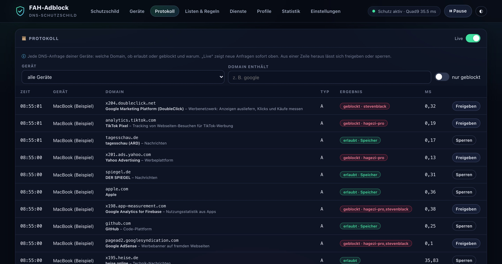
Das Protokoll listet jede DNS-Anfrage: Uhrzeit, Gerät, Domain mit Beschreibung, Typ, Ergebnis mit Grund und Antwortzeit in Millisekunden.
| Bedienelement | Was es macht |
|---|---|
| Gerät | Nur Anfragen eines Geräts zeigen. |
| Domain enthält | Suche nach einem Teil des Namens, z. B. google. |
| nur geblockt | Blendet erlaubte Anfragen aus. |
| Live | Neue Anfragen erscheinen sofort oben. Zum Lesen ausschalten. |
| Freigeben / Sperren | Direkt aus der Zeile eine Freigabe (Auswahl wie in der Rettung) oder eine Sperre für das Gerät oder alle Geräte anlegen. |
| Ältere laden | Blättert weiter zurück (so weit, wie das Protokoll aufbewahrt wird). |
| Ergebnis | Bedeutung |
|---|---|
| geblockt · Listenname | Auf dieser Blockliste, Kategorie im Profil gesperrt. |
| geblockt · Eigene Regel | Durch eine selbst angelegte Sperrregel. |
| geblockt · getarnter Tracker | Die Domain leitet per CNAME auf einen gesperrten Tracker weiter. |
| erlaubt · Speicher | Beim verschlüsselten Anbieter nachgefragt bzw. aus dem Zwischenspeicher beantwortet. |
| · eigene Freigabe · Freigabeliste · Pause | Durch eine eigene Regel „erlauben“ (auch aus der Rettung), eine Freigabeliste bzw. während einer Pause erlaubt. |
| lokal (Gateway) Fehler gebremst | Lokale Zone beim Gateway nachgefragt · Anbieter nicht erreichbar · Gerät stellt ungewöhnlich viele Anfragen (über 100 pro Sekunde). |
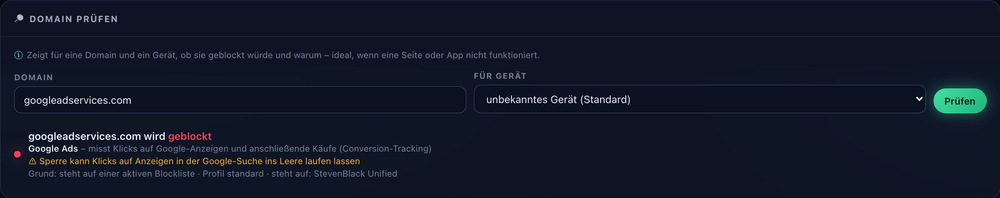
Domain eintragen, optional ein Gerät wählen, Prüfen. FAH-Adblock sagt, ob die Domain für dieses Gerät geblockt würde, warum, welches Profil gilt und auf welchen Listen sie steht. Ideal, bevor man etwas freigibt oder sperrt.
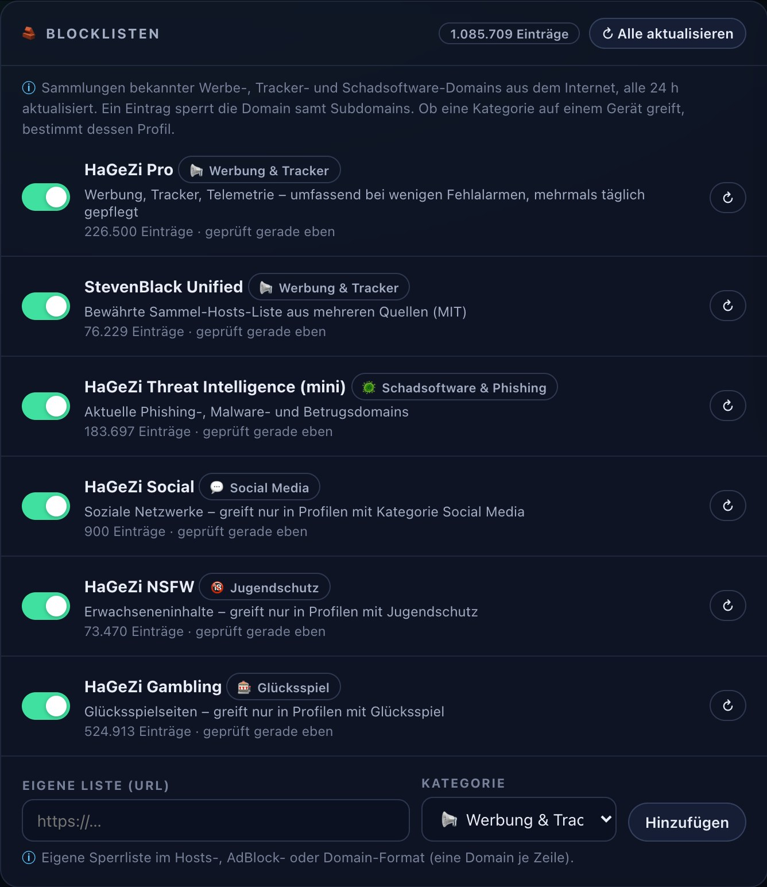
Sammlungen bekannter Werbe-, Tracker- und Schadsoftware-Domains aus dem Internet. Sie werden beim ersten Einschalten geladen und danach alle 24 Stunden erneuert. Ein Eintrag sperrt die Domain samt allen Subdomains.
| Liste | Kategorie | Inhalt |
|---|---|---|
| HaGeZi Pro | Werbung & Tracker | Werbung, Tracker, Telemetrie – umfassend bei wenigen Fehlalarmen |
| StevenBlack Unified | Werbung & Tracker | Bewährte Sammelliste aus mehreren Quellen |
| HaGeZi Threat Intelligence | Schadsoftware & Phishing | Aktuelle Phishing-, Malware- und Betrugsdomains |
| HaGeZi Social | Social Media | Soziale Netzwerke |
| HaGeZi NSFW | Jugendschutz | Erwachseneninhalte |
| HaGeZi Gambling | Glücksspiel | Online-Casinos, Sportwetten |
Ob eine Liste auf einem Gerät tatsächlich blockt, entscheidet das Profil des Geräts. Die Social-Media-Liste ist zum Beispiel eingeschaltet, sperrt aber nur Geräte mit dem Profil „Kinder“ – und dort nur im Zeitfenster.
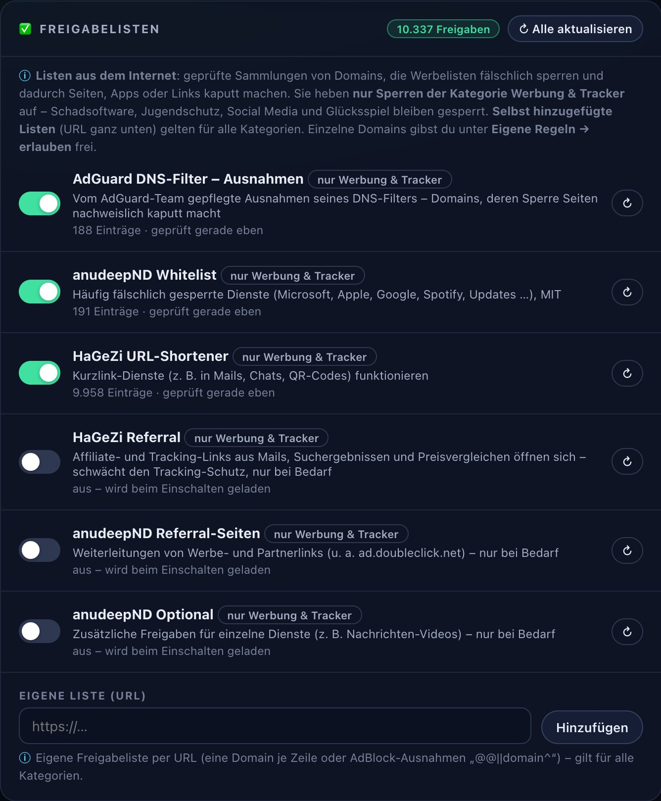
Geprüfte Sammlungen von Domains, die Werbelisten fälschlich sperren und dadurch Seiten, Apps oder Links kaputt machen. Sie heben nur Sperren der Kategorie „Werbung & Tracker“ auf. Schadsoftware, Jugendschutz, Social Media und Glücksspiel bleiben gesperrt.
| Liste | Stand |
|---|---|
| AdGuard DNS-Filter – Ausnahmen | an |
| anudeepND Whitelist | an |
| HaGeZi URL-Shortener | an |
| HaGeZi Referral | aus |
| anudeepND Referral-Seiten | aus |
| anudeepND Optional | aus |
Die ausgeschalteten Listen öffnen Affiliate- und Weiterleitungslinks – bequemer, aber mit weniger Tracking-Schutz. Nur bei Bedarf einschalten. ↻ Alle aktualisieren lädt alle Freigabelisten sofort neu.
Eigene Freigabeliste (URL): eine Domain je Zeile oder AdBlock-Ausnahmen @@||domain^ – gilt für alle Kategorien.
Einzelne Domains gibst du nicht hier, sondern unter Eigene Regeln → erlauben frei.
Die AdGuard-Ausnahmen geben einzelne Dienste frei, die Werbelisten sperren würden, z. B. cdn.taboola.com, statcounter.com und core.crazyegg.com – weil deren Sperre nachweislich Seiten stört. Stört das, die Liste ausschalten oder die Domains als eigene Sperrregel eintragen (Sperrregeln haben Vorrang).
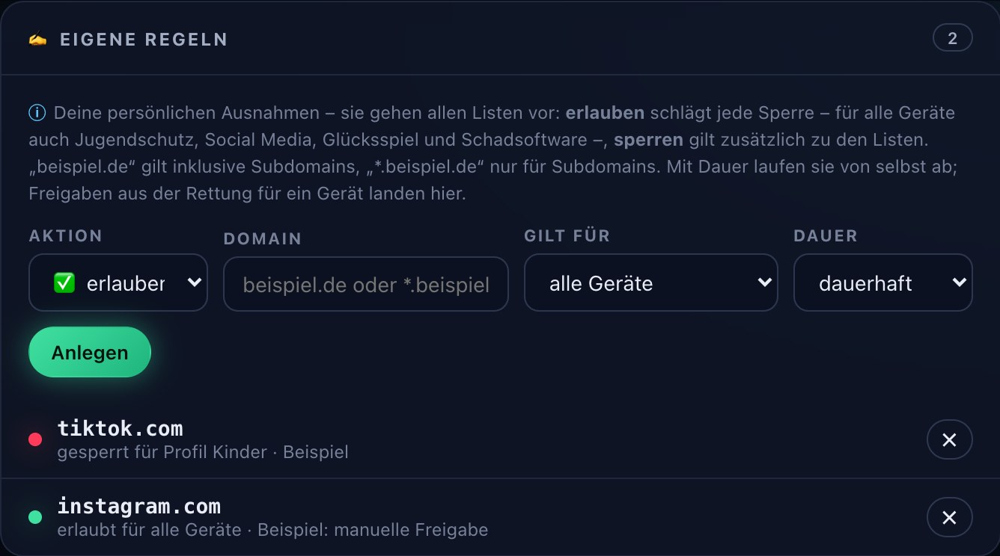
Persönliche Ausnahmen, die allen Listen vorgehen – alle eigenen Freigaben und Sperren stehen hier an einer Stelle, auch die aus der Rettung.
| Feld | Bedeutung |
|---|---|
| Aktion | ✅ erlauben schlägt jede Sperre – für „alle Geräte“ auch Jugendschutz, Social Media, Glücksspiel und Schadsoftware. ⛔ sperren blockt zusätzlich zu den Listen. |
| Domain | beispiel.de = Domain und alle Subdomains; *.beispiel.de = nur Subdomains. |
| gilt für | alle Geräte, ein Profil (z. B. alle Kindergeräte) oder ein einzelnes Gerät. |
| Dauer | Ohne Dauer dauerhaft; mit Dauer läuft die Regel von selbst ab. |
| Notiz | Freitext, damit man später noch weiß, warum. |
tiktok.com · Profil Kinderlist-manage.com · alle Geräte*.waipu.tv · alle GeräteHier stehen 280 bekannte Dienste in 18 Rubriken – von waipu.tv und YouTube über Social Media, Messenger, Spiele, Shopping, E-Mail, Schule, Banken und Reisen bis zu Smart Home und den Grundfunktionen der Geräte. Jeder Dienst hat einen von drei Zuständen:
| Zustand | Bedeutung | Vorgabe für |
|---|---|---|
| ✓ geschützt | Keine Blockliste kann den Dienst sperren – auch nicht Werbe-, Social-Media- oder Jugendschutzlisten. | Fernsehen & Video, Musik & Audio, Schule & Lernen, Finanzen/Behörden/Gesundheit, Smart Home & Geräte, Geräte & System |
| ○ nach Listen | Normal: Blocklisten und das Profil des Geräts entscheiden. | Social Media, Messenger, Spiele, Shopping, Suche & KI, Nachrichten, Cloud & Arbeit, E-Mail, Reisen & Mobilität, Telefon & Internet, Dating, VPN & Umgehung – Ausnahme: Pokémon GO und PokeRaid sind ab Werk geschützt |
| ⛔ gesperrt | Von dir gesperrt – für alle Geräte oder nur für ein Profil. | – |
tiktok) oder über Anzeigen nur geschützte, nur „nach Listen“ oder nur gesperrte zeigen.Smart-TV-Grundfunktionen gilt für alle Hersteller – Samsung, LG, Sony, Panasonic, Philips, Hisense, TCL, Roku, Fire TV und Android TV/Google TV. Fährt man mit der Maus über eine Kachel, zeigt der Hinweis alle zugehörigen Adressen und – falls vorhanden – die Ausnahmen: reine Mess- und Werbe-Adressen innerhalb des Dienstes (z. B. acr-*.samsungcloud.tv), für die weiter die Blocklisten entscheiden. Die Rubriken Dating und VPN & Umgehung sind zum Sperren gedacht, etwa im Profil „Kinder“: ein VPN würde sonst den gesamten Filter umgehen.
Microsoft Teams umfasst alles, was Teams braucht: Chat, Anrufe und Besprechungen samt der Anruf-Infrastruktur (die früheren Skype-Adressen – einen eigenen Dienst „Skype“ gibt es deshalb nicht mehr), Konfiguration, GIFs und den Diagnosekanal der App. Blocklisten führen diesen Diagnosekanal als Telemetrie; ist er gesperrt, rennt die App ununterbrochen dagegen an. Wer zu Hause mit Teams arbeitet, stellt den Dienst auf geschützt – am besten zusammen mit „Microsoft 365“ (Dateien, Aufzeichnungen); „Microsoft-Konto“ ist ab Werk geschützt.
Blocklisten führen einzelne Adressen von Streamingdiensten (z. B. Nutzungsstatistik von Netflix oder Samsung). Sperrt man sie, meldet der Fernseher „kein Internet“ oder eine App startet nicht. Deshalb sind Fernsehen, Musik und Geräte-Grundfunktionen geschützt – gesperrt wird nur, was du selbst sperrst. Das gilt auch für selbst hinzugefügte Sperrlisten: sogenannte „SmartTV“-Listen sperren z. B. das Samsung-Konto, danach lässt sich der Fernseher nicht mehr per Handy (SmartThings) bedienen – der Dienst „Samsung-Konto & SmartThings“ verhindert das. Reine Mess-Adressen innerhalb geschützter Domains (z. B. acr-eu-prd.samsungcloud.tv, die Sehverhaltens-Erkennung) bleiben trotzdem geblockt; sie stehen im Hinweistext des Dienstes und haben mit „Samsung Cloud“ nichts zu tun.
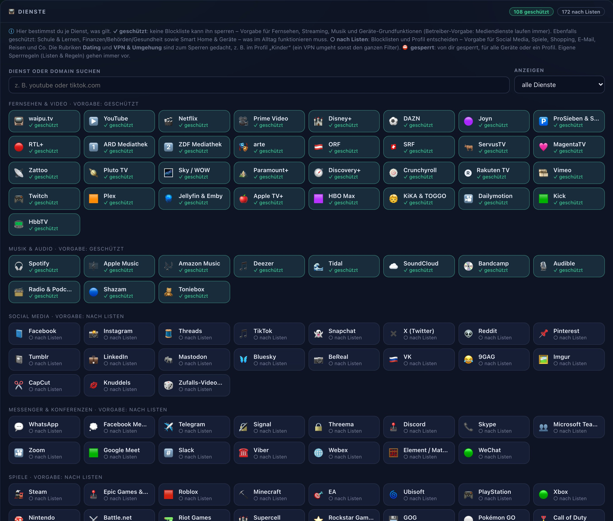
Eigene Sperrregeln (Kapitel 8) gehen dem Schutz immer vor. Im Protokoll steht „erlaubt · geschützt (Dienst)“ bzw. „geblockt · Dienst gesperrt“.
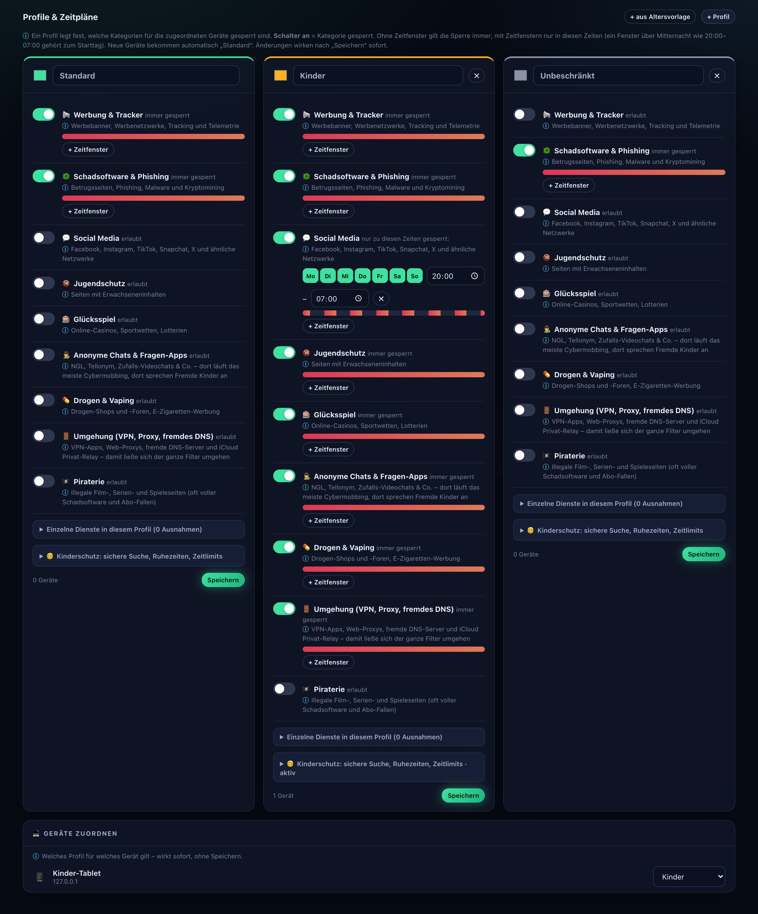
Ein Profil legt fest, welche Kategorien (Werbung & Tracker, Schadsoftware & Phishing, Social Media, Jugendschutz, Glücksspiel, anonyme Chats, Drogen & Vaping, Umgehung, Piraterie) für die zugeordneten Geräte gesperrt sind. Schalter an = Kategorie gesperrt. Eigene Freigaben gelten unabhängig vom Profil.
Kinderprofile sind ganz normale Profile mit mehr Schutz. Jede Profilkarte hat unten den Bereich 🧒 Kinderschutz mit sicherer Suche, YouTube-Modus, Ruhezeiten, Zeitlimits und Altersvorlage (Kapitel 11). Für jedes Kind lässt sich ein eigenes Profil anlegen – am schnellsten mit + aus Altersvorlage (Grundschule, Klasse 5 bis 7, ab 14) und danach anpassen.
| Profil | Voreinstellung |
|---|---|
| Standard | Werbung & Tracker sowie Schadsoftware gesperrt. Jedes neue Gerät bekommt automatisch dieses Profil. |
| Kinder | Zusätzlich Jugendschutz, Glücksspiel, anonyme Chats, Drogen und Umgehung immer, Social Media täglich 20:00–07:00, Messenger-Nachtruhe 21:00–06:30, sichere Suche (seit 23.11.2026, siehe Kapitel 11). Zugeordnet: Nintendo Switch, Gast Smartphone NEU und ALT, Gast-tab, papa-Lenovo und drei weitere Geräte aus dem früheren UniFi-Filter „Kinder“. |
| Unbeschränkt | Nur Schadsoftware & Phishing gesperrt – z. B. für ein Arbeitsgerät, das keine Filterung verträgt. |
Ohne Zeitfenster gilt die Sperre immer. Ein Fenster über Mitternacht (z. B. 20:00–07:00) gehört zum Starttag: „Mo 20:00–07:00“ sperrt von Montagabend bis Dienstagmorgen.
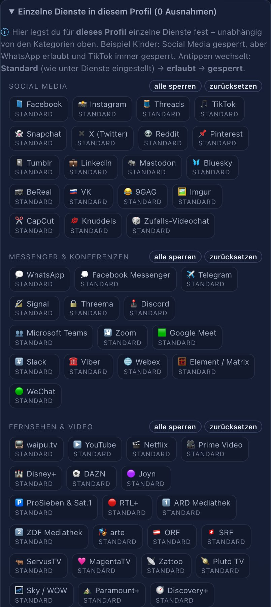
Unter den Kategorien jedes Profils steht Einzelne Dienste in diesem Profil. Damit legst du für genau dieses Profil fest, was gilt – unabhängig von den Kategorien und vom allgemeinen Zustand unter Dienste.
Antippen wechselt zwischen Standard (wie unter Dienste eingestellt), erlaubt und gesperrt. Je Rubrik gibt es alle sperren und zurücksetzen. Die Änderung wirkt nach Speichern.
Kategorie Social Media abends gesperrt, aber WhatsApp erlaubt (Kontakt zu den Eltern) und TikTok immer gesperrt – unabhängig von der Uhrzeit.
Profile verwalten: Name und Farbe direkt im Kopf der Profilkarte ändern · + Profil legt ein neues an, ✕ löscht es (Geräte fallen auf „Standard“ zurück; „Standard“ bleibt immer) · Geräte zuordnen (unten) wirkt sofort ohne Speichern – ebenso die Auswahl auf der Gerätekarte.
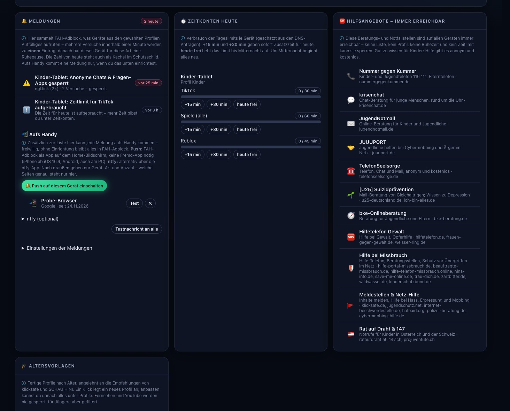
Seit 23.11.2026 bündelt die Ansicht Kinderschutz, was Eltern im Alltag brauchen. Enthalten ist alles, was ein DNS-Filter dafür leisten kann.
FAH-Adblock sieht nur, welche Seiten ein Gerät aufruft, nie den Inhalt von Chats. Mobbing selbst erkennt er nicht. Er sperrt die Orte, an denen es meist passiert (anonyme Frage-Apps, Zufallschats), meldet Versuche, hält Hilfsangebote immer offen und begrenzt Zeiten. Chats mitlesen gehört nicht dazu.
| Kategorie | Liste | Wozu |
|---|---|---|
| 🕵️ Anonyme Chats & Fragen-Apps | eigene Liste (kommt mit jedem Update) | NGL, Tellonym, sendit, Jodel, Yubo, Omegle-Nachfolger und Zufalls-Videochats – dort läuft das meiste Cybermobbing, dort sprechen Fremde Kinder an. |
| 💊 Drogen & Vaping | Blocklist Project Drogen + Vaping | Drogen-Shops und -Foren, E-Zigaretten-Werbung. |
| 🚪 Umgehung | HaGeZi DoH/VPN/TOR/Proxy | fremde verschlüsselte DNS-Server, VPN-Apps, Web-Proxys, iCloud Privat-Relay – damit ließe sich der ganze Filter umgehen. |
| 🏴☠️ Piraterie | Blocklist Project Piraterie | illegale Film- und Spieleseiten (oft voller Schadsoftware). |
Dazu die Liste Blocklist Project Betrug in der Kategorie Schadsoftware – ab Werk aus, weil sie für alle Profile gälte und vereinzelt Fehlalarme hat. Das Profil „Kinder“ bekam beim Update einmalig anonyme Chats, Drogen, Umgehung, Messenger-Nachtruhe 21:00–06:30 und die sichere Suche; was du danach änderst, bleibt.
Die Rubrik Hilfe & Beratung (Nummer gegen Kummer, krisenchat, JugendNotmail, JUUUPORT, TelefonSeelsorge, [U25], bke-Onlineberatung, Hilfetelefon Gewalt, Hilfe bei Missbrauch, Meldestellen, Rat auf Draht/147) ist fest geschützt: keine Liste, keine eigene Sperrregel, kein Profil, keine Ruhezeit und kein Zeitlimit kann sie sperren. Unter Dienste steht sie mit 🔒.
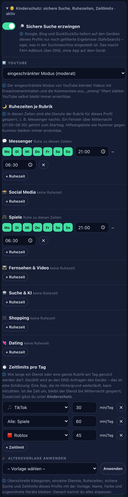
Jede Profilkarte hat unten den Bereich 🧒 Kinderschutz (aufklappen; „· aktiv“, sobald etwas eingestellt ist). Alles wirkt nach Speichern sofort.
| Vorlage | Inhalt |
|---|---|
| Grundschule (6–10) | keine sozialen Netzwerke und Messenger, Spiele 60 min/Tag und ab 19:30 Ruhe, sichere Suche, YouTube streng. |
| Klasse 5 bis 7 (10–13) | WhatsApp, Signal, Threema erlaubt; TikTok, Snapchat, Discord gesperrt; Messenger 21:00–06:30, Spiele 90 min/Tag, YouTube moderat. |
| Ab 14 | soziale Netzwerke erlaubt; anonyme Chats, Drogen, Glücksspiel, Umgehung gesperrt; Messenger und Social Media 22:30–06:00 Ruhe. |
Anlegen unter Kinderschutz → Altersvorlagen → Als Profil anlegen oder Profile → + aus Altersvorlage. Fernsehen und YouTube werden nie gesperrt (Grundsatz), für Jüngere aber gefiltert.
Zeigt je Gerät den Verbrauch jedes Limits. +15 min / +30 min geben sofort Zusatzzeit für heute, heute frei hebt das Limit bis Mitternacht auf, Zusatz zurück nimmt sie zurück. Um Mitternacht beginnt alles neu. Der Ersatz schickt seine Nutzung beim Abgleich an den Haupt und übernimmt dessen „aufgebraucht“.
FAH-Adblock sammelt Auffälliges selbst: Sperren in den gewählten Kategorien (Werbung nie), optional gesperrte Dienste und aufgebrauchte Zeitlimits, jeweils nur für Geräte der gewählten Profile. Mehrere Versuche innerhalb einer Minute werden zu einem Eintrag gebündelt, danach hat das Gerät für diese Art eine Ruhepause (Vorgabe 60 min). Die Liste steht oben in Kinderschutz → Meldungen, die Zahl von heute als Kachel im Schutzschild (rot, sobald es etwas gibt). Einstellungen unter „Einstellungen der Meldungen“. Ohne weitere Einrichtung bleibt alles in FAH-Adblock.
Ist ein Gerät laut UniFi im Netz, schickt aber seit X Minuten (Vorgabe 30) keine Anfrage mehr an FAH-Adblock, kommt die Meldung „fragt FAH-Adblock nicht mehr“ – meist ein eigenes DNS, eine VPN-App oder iCloud Privat-Relay. Höchstens eine Meldung je Gerät alle 6 Stunden. Braucht den UniFi-Zugang.
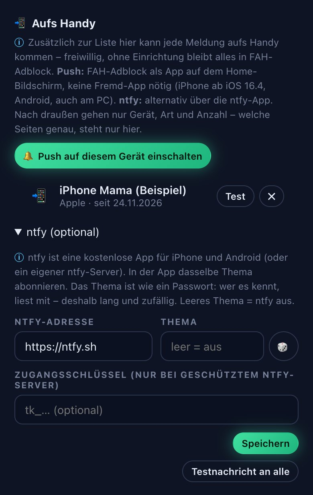
Zusätzlich kann jede Meldung als Benachrichtigung aufs Handy kommen. Nach draußen gehen nur Gerät, Art und Anzahl („Tablet: Anonyme Chats gesperrt – 3 Versuche“); welche Seiten genau, steht nur in FAH-Adblock. In der Liste zeigt 📲 an, dass eine Meldung rausging.
Push – FAH-Adblock als App, keine Fremd-App:
Benachrichtigungen kommen auch unterwegs an (über Apple bzw. Google). Abgelaufene Geräte entfernt FAH-Adblock selbst, ✕ entfernt eines von Hand.
ntfy (optional): unter „ntfy (optional)“ ein langes Thema eintragen (🎲) und in der ntfy-App abonnieren; leeres Thema = aus. Der Zugangsschlüssel eines eigenen ntfy-Servers geht nur über https, im Heimnetz auch über http.
Eingerichtet wird am Haupt. Der Ersatz bekommt Push-Schlüssel, Geräte und ntfy beim Abgleich verschlüsselt mit und schickt Meldungen selbst nur, solange der Haupt ausgefallen ist (nach 6 Minuten).
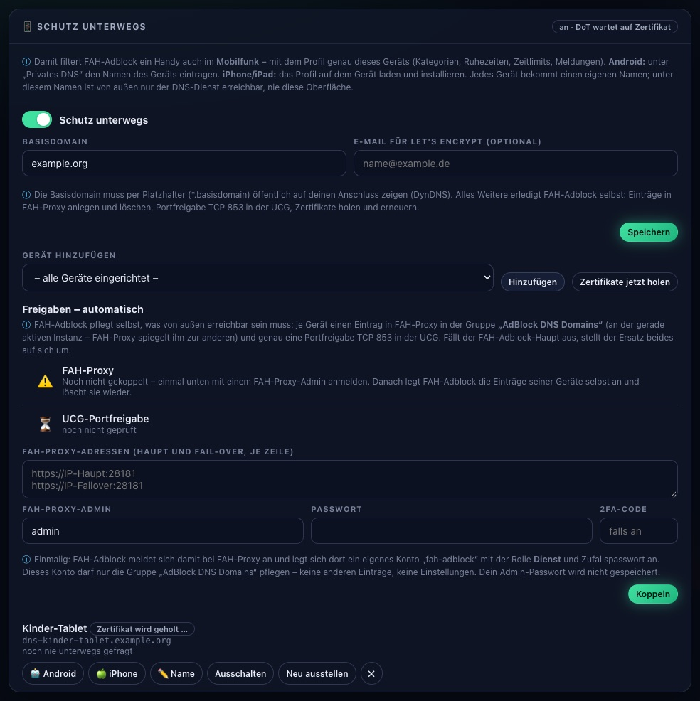
Eine Grundfunktion für alle Geräte – nicht nur für Kinder: Ein Handy oder Tablet filtert damit auch im Mobilfunk und in fremden WLANs über FAH-Adblock, mit dem Profil genau dieses Geräts. Eigener Menüpunkt 📱 Unterwegs; die Kachel „Unterwegs geschützt“ im Schutzschild führt direkt dorthin.
Ein Kinderhandy filtert damit auch unterwegs über FAH-Adblock – mit dem Profil genau dieses Geräts. Jedes Gerät bekommt einen eigenen Namen dns-<kennung>.<Basisdomain>. Unter diesem Namen antwortet FAH-Adblock nur als DNS-Dienst; Oberfläche, API und Anmeldung sind von außen nicht erreichbar.
Let's Encrypt stellt für eine Domain wie selfhost.eu höchstens 50 Zertifikate pro Woche aus – geteilt mit allen Nutzern dieser DynDNS-Domain. Ist das Kontingent aus, nimmt Caddy ZeroSSL; das kann einige Minuten dauern. Darum Gerätenamen möglichst nicht ständig ändern: jeder neue Name braucht ein neues Zertifikat.
UniFi kennt je Portfreigabe nur ein Ziel. Deshalb stellt die gerade zuständige Instanz die Freigabe auf sich um – wie FAH-Proxy bei 80/443. Der Ersatz bekommt Zertifikate und den FAH-Proxy-Zugang beim Abgleich verschlüsselt vom Haupt. Ist der Haupt länger als 6 Minuten weg, stellt der Ersatz FAH-Proxy-Einträge und die 853-Freigabe auf sich um; kommt der Haupt zurück, holt er beides mit seiner nächsten Pflege (spätestens nach 10 Minuten) zurück.
Neu ausstellen erzeugt ein neues Geheimnis für das iPhone-Profil (z. B. wenn ein Handy verloren ging) – der kurze Name bleibt, das iPhone-Profil danach neu installieren. Den Namen änderst du mit ✏️; FAH-Proxy-Eintrag und Zertifikat folgen von selbst. DoT läuft an der zuständigen Instanz: am Haupt, nach einem Ausfall am Ersatz. Die Dashboard-Kachel Unterwegs geschützt zählt die Geräte, die in der letzten Stunde von unterwegs gefragt haben.
Wer den Namen kennt, kann darüber DNS auflösen (Namen mit Zertifikat stehen in öffentlichen Zertifikats-Logs). Die Anfragen werden dem Gerät zugeschrieben und gebremst; Heimnetz-Namen gibt es von draußen nie. Das iPhone-Profil enthält zusätzlich ein Geheimnis im Pfad.
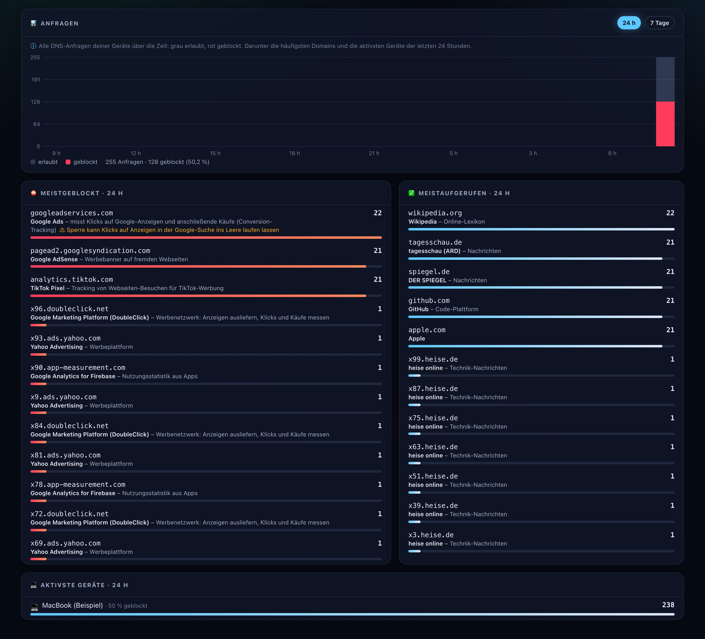
Die Stundensummen bleiben 35 Tage erhalten, auch wenn einzelne Anfragen im Protokoll schon gelöscht sind.
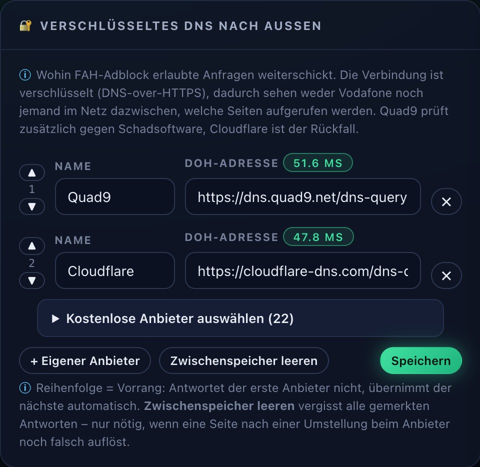
Wohin FAH-Adblock erlaubte Anfragen weiterschickt. Die Verbindung ist per DNS-over-HTTPS verschlüsselt – weder der Internetanbieter noch jemand dazwischen sieht, welche Seiten aufgerufen werden.
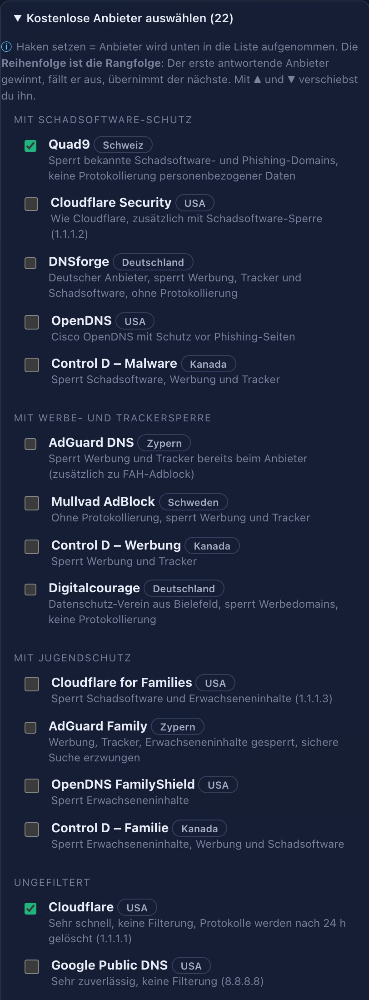
| Einstellung | Was sie macht |
|---|---|
| Anbieterliste | Name und DoH-Adresse. Reihenfolge = Vorrang: Antwortet der erste nicht, übernimmt der nächste. Voreingestellt: Quad9 (prüft zusätzlich gegen Schadsoftware), Rückfall Cloudflare und DNS.SB – bewusst nur Anbieter ohne eigene Werbesperre, denn FAH-Adblock filtert selbst. Neben jedem Anbieter stehen Antwortzeit und Fehlerzahl. Anbieter mit eigener Werbe- oder Trackersperre (DNSforge, Mullvad AdBlock, AdGuard …) sperren zusätzlich nach ihren eigenen Listen; für geschützte Dienste und eigene Freigaben gilt das nicht – sperrt ein Anbieter dort, fragt FAH-Adblock automatisch den nächsten. |
| Kostenlose Anbieter auswählen | Katalog mit 21 öffentlichen DoH-Anbietern (Quad9, Cloudflare, Google, Mullvad, AdGuard, DNSforge, DNS.SB …), gruppiert nach Schadsoftware-Schutz, Werbesperre, Jugendschutz und ungefiltert – mit Land und kurzer Beschreibung. Haken setzen nimmt den Anbieter in die Liste auf. |
| ▲ / ▼ | Rangfolge ändern: Der erste Anbieter wird gefragt, die anderen sind Rückfall. |
| + Eigener Anbieter | Eigenen DoH-Anbieter ergänzen (Adresse beginnt mit https://). |
| Zwischenspeicher leeren | Vergisst alle gemerkten Antworten. Nur nötig, wenn eine Seite nach einer Umstellung beim Anbieter noch falsch auflöst. |
Fällt ein Anbieter dreimal hintereinander aus, setzt FAH-Adblock ihn 30 Sekunden aus und probiert es dann erneut.
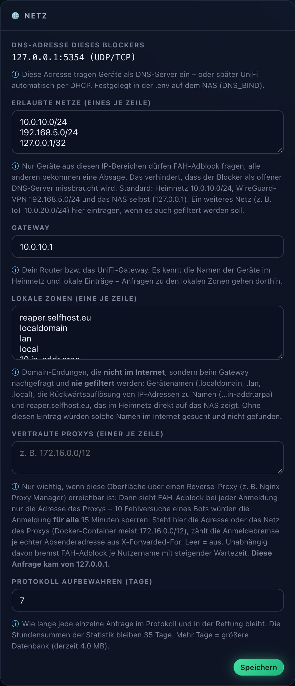
| Einstellung | Was sie macht |
|---|---|
| DNS-Adresse | Die Adresse, die Geräte als DNS-Server nutzen – auf dem NAS 192.168.1.23:53. Nur anzeigbar; festgelegt in der .env (DNS_BIND). |
| Erlaubte Netze | Nur Geräte aus diesen IP-Bereichen dürfen fragen, alle anderen bekommen eine Absage. So wird FAH-Adblock nicht als offener DNS-Server missbraucht. Standard: 192.168.1.0/24 (Homelab), 192.168.5.0/24 (VPN), 127.0.0.1/32 (NAS). Ein weiteres Netz (z. B. IoT) hier eintragen, wenn es mitgefiltert werden soll. |
| Gateway | Das UniFi-Gateway (192.168.1.1). Es kennt die Gerätenamen und lokalen Einträge; Anfragen zu lokalen Zonen gehen dorthin. |
| Lokale Zonen | Domain-Endungen, die nicht im Internet, sondern beim Gateway nachgefragt und nie gefiltert werden: Gerätenamen (.localdomain, .lan, .local), die Rückwärtsauflösung von IP-Adressen (…in-addr.arpa) und example.org, das im Heimnetz direkt auf das NAS zeigt. |
| Protokoll aufbewahren | Wie viele Tage jede einzelne Anfrage im Protokoll und in der Rettung bleibt (1–90, Standard 7). Mehr Tage = größere Datenbank; die Größe steht dabei. Bestimmt auch, wie weit die Liste „Meistgeblockt“ zurückreicht. |
| Vertraute Proxys | Adressen oder Netze, aus denen ein Reverse-Proxy den Blocker anspricht (hier: der Nginx Proxy Manager im Docker-Netz 192.168.48.0/20). Für Anfragen von dort zählt die Anmeldebremse die echte Absenderadresse aus dem Header X-Forwarded-For – sonst teilen sich alle Zugriffe aus dem Internet die Adresse des Proxys, und zehn Fehlversuche eines Bots sperren jede Anmeldung über die Domain für 15 Minuten. Der Erklärtext zeigt live „Diese Anfrage kam von …“: die Oberfläche über die Domain aufrufen und die gezeigte Adresse (bzw. ihr Netz) eintragen. Leer = wie bisher. |
| Sperrseite anzeigen | Gesperrte Seiten zeigen statt einer Browser-Fehlermeldung den Hinweis „Diese Seite ist gesperrt“ mit Domain und Grund. Werbung und Tracker bleiben stumm geblockt. Der Schalter wirkt sofort und gilt auch für die Ersatz-Instanz; am FAH-Proxy muss die Sperrseite ebenfalls eingeschaltet sein. Damit der Browser nicht warnt, einmal je Gerät über Zertifikat für Geräte laden das Zertifikat installieren und ihm vertrauen. Geräte im IoT-Netz sehen die Seite nicht. |
Änderungen mit Speichern übernehmen – sie wirken sofort, ohne Neustart.
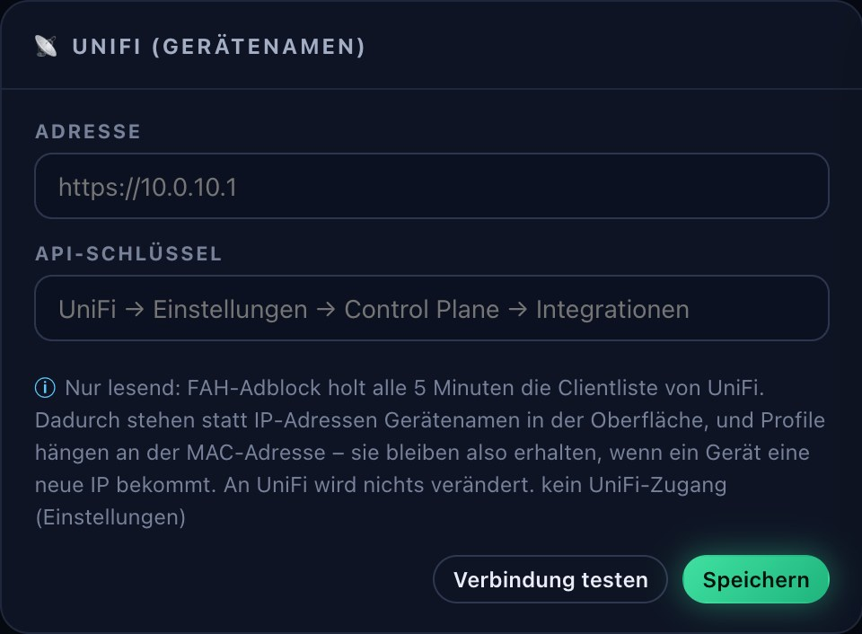
Nur lesend: FAH-Adblock holt alle 5 Minuten die Clientliste von UniFi. Dadurch stehen statt IP-Adressen Gerätenamen und -symbole in der Oberfläche, und Profile hängen an der MAC-Adresse. Taucht ein neues Gerät auf, fragt FAH-Adblock UniFi sofort nach – so bekommt es von der ersten Anfrage an sein Profil. An UniFi wird nichts verändert.
| Einstellung | Was sie macht |
|---|---|
| Adresse | Adresse des UniFi-Gateways, z. B. https://192.168.1.1. |
| API-Schlüssel | In UniFi unter Einstellungen › Control Plane › Integrationen erzeugen und hier einfügen. Er wird verschlüsselt gespeichert und nie wieder angezeigt; „gesetzt“ zeigt, dass einer hinterlegt ist. Feld leer lassen = unverändert. |
| Verbindung testen | Liest die Clientliste einmal und meldet, wie viele Geräte gerade online sind. |
Ohne UniFi-Zugang funktioniert alles genauso – nur mit Rechnernamen oder IP-Adressen statt der UniFi-Namen.
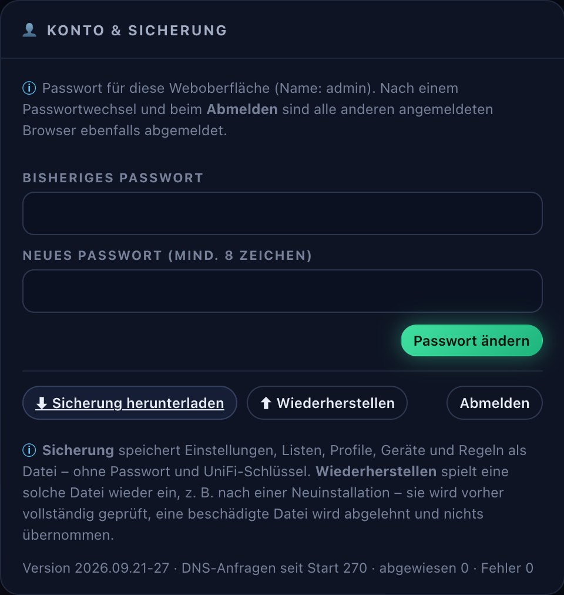
| Einstellung | Was sie macht |
|---|---|
| Passwort ändern | Bisheriges und neues Passwort (mindestens 8 Zeichen). Name bleibt admin. Alle anderen Sitzungen (Handy, zweiter Browser) werden dabei abgemeldet; die aktuelle läuft weiter. |
| ⬇ Sicherung | Speichert Einstellungen, Listen, Profile, Geräte und Regeln als Datei – ohne Passwort und UniFi-Schlüssel. |
| ⬆ Wiederherstellen | Spielt eine solche Datei wieder ein, z. B. nach einer Neuinstallation. |
| Abmelden | Beendet alle Sitzungen dieses Nutzers – auch auf anderen Geräten. Ein abhandengekommenes Anmelde-Cookie ist danach wertlos. |
Je Absenderadresse sind 10 Fehlversuche in 15 Minuten erlaubt. Zusätzlich gilt je Nutzername, egal von wo: ab dem dritten Fehlversuch eine Wartezeit von 2 Sekunden, die sich bei jedem weiteren verdoppelt (bis 15 Minuten) – die Meldung nennt die Restwartezeit. Ein Bot, der dauernd „admin“ probiert, kann die Anmeldung so kurz blockieren; das ist Absicht. Hinter dem Proxy braucht es dafür die Einstellung „Vertraute Proxys“.
Unten stehen die Version und Zähler seit dem Start (Anfragen, abgewiesen, Fehler).
Auf dem NAS im Ordner /volume3/docker/fah-adblock/data die Datei mit den Zugangsdaten (nutzer.json) entfernen und ./manage.sh restart ausführen. Danach gilt wieder admin / admin – sofort ändern.
FAH-Adblock läuft als ein Docker-Container im Host-Netz des NAS unter /volume3/docker/fah-adblock. Alle Befehle dort per SSH ausführen.
| Befehl | Was er macht |
|---|---|
./manage.sh update | Update aus fah-adblock_release.zip im selben Ordner (bei mehreren Downloads gewinnt die höchste „(N)“). Baut neu, startet und wartet, bis DNS und Oberfläche antworten. |
./manage.sh update --no-cache | Wie oben, mit komplettem Neubau des Containers. |
./manage.sh status | Zeigt, ob der Container läuft und gesund ist. |
./manage.sh logs | Laufende Meldungen (Beenden mit Strg+C). |
./manage.sh start | stop | restart | Starten, stoppen, neu starten. |
./manage.sh url | Zeigt die Adressen von Oberfläche und DNS. |
./manage.sh port [PORT] | Port der Oberfläche anzeigen oder ändern. |
./manage.sh test | DNS-Probe gegen den laufenden Dienst (11 Prüfungen: Werbung geblockt, erlaubt, lokale Zone, TCP, Firefox-Prüf-Domain …). |
| Teil | Beim Update |
|---|---|
| Programm (src, public, tools, Dockerfile) | wird ersetzt |
.env, docker-compose.yml | bleiben unverändert (nur bei der Erstinstallation aus den Vorlagen angelegt) |
data/ (Einstellungen, Listen, Protokoll, Zugang) | wird nie angefasst |
| Port der Oberfläche | bei der Erstinstallation automatisch ein freier Port (Portautomatik), danach fest |
| DNS-Port 53 | fest – ist er durch einen anderen Dienst belegt, bricht der Start mit Hinweis ab |
Während eines Updates ist FAH-Adblock etwa zehn Sekunden nicht erreichbar. Homelab und IoT haben in dieser Zeit keine Namensauflösung (sie kennen nur diesen einen DNS-Server); Browser und Apps überbrücken das aus ihrem Zwischenspeicher. VPN-Clients weichen auf ihren zweiten Eintrag aus.
Mit v21 wurde das Anmelde-Cookie um einen Sitzungszähler ergänzt – alle bis dahin angemeldeten Browser mussten sich einmal neu anmelden. Seither passiert das nur noch beim Abmelden oder Passwortwechsel.
DNS_BIND=192.168.1.23 # NAS-Adresse, auf der DNS lauscht (UDP/TCP 53) DNS_PORT=53 WEB_PORT=8053 # Oberfläche (Portautomatik bei Erstinstallation) GATEWAY=192.168.1.1 # für lokale Namen ERLAUBTE_NETZE=192.168.1.0/24,192.168.5.0/24,127.0.0.1/32 VERTRAUTE_PROXIES= # Startwert für „Vertraute Proxys“ (nur Erstinstallation), z. B. 192.168.48.0/20 TZ=Europe/Berlin SESSION_SECRET= # leer = wird beim ersten Start erzeugt
Werte aus der .env gelten als Startwerte; Erlaubte Netze und Gateway lassen sich danach in der Oberfläche ändern.
Für eine vollständige Sicherung genügt der Ordner data/ zusammen mit .env und docker-compose.yml. Die Sicherung aus der Oberfläche (Kapitel 14) enthält alle Einstellungen, aber bewusst kein Passwort und keinen UniFi-Schlüssel.
| Problem | Vorgehen |
|---|---|
| Teams-Anrufe kommen nicht zustande oder brechen ab | Unter Dienste → Messenger & Konferenzen „Microsoft Teams“ und unter Cloud & Arbeit „Microsoft 365“ auf geschützt stellen. Im Protokoll nach dem Gerät filtern: steht dort weiter „geblockt“ bei einer Microsoft-Adresse, die Adresse melden. Steht ein filternder DNS-Anbieter (z. B. DNSforge) in der Anbieterliste, sperrte dieser früher unbemerkt Teile der Anruf-Konfiguration – seit Version 2026.09.21-29 werden geschützte Dienste an ihm vorbei aufgelöst. Bleibt das Protokoll sauber, liegt es nicht am Filter (dann Firewall, VPN oder WLAN prüfen – Anrufe laufen über UDP 3478–3481). |
| Fernseher lässt sich nicht mehr per Handy (SmartThings) bedienen | Unter Dienste → Geräte & System prüfen, dass „Samsung-Konto & SmartThings“ und „Smart-TV-Grundfunktionen“ geschützt sind. Danach die SmartThings-App einmal ganz schließen und neu öffnen, notfalls den Fernseher kurz vom Strom nehmen. |
| Fernseher meldet „kein Internet“, Apps starten nicht | Unter Listen & Regeln → Streaming & Medien prüfen, dass „Smart-TV-Grundfunktionen“ und der Dienst (z. B. waipu.tv) geschützt sind. Dann Netzwerkstatus am TV erneut prüfen. |
| Seite, App oder Link geht nicht | Geräte → 🛟 Rettung → verdächtige Domain „Freigeben · 1 h“ → neu laden. Hilft das nicht: „Gerät 15 min pausieren“. Geht es dann immer noch nicht, liegt es nicht am Blocker. |
| Link aus Mail/Newsletter geht nicht | Meist ein Klick-Tracker (z. B. list-manage.com, sendgrid.net). In der Rettung freigeben oder die Freigabeliste „HaGeZi Referral“ einschalten. |
| Werbung wird trotzdem angezeigt | Kommt sie von derselben Domain wie der Inhalt (YouTube, Instagram), kann DNS sie nicht trennen. Sonst: Gerät unter „Geräte“? Sicheres DNS/Privat-Relay (Kapitel 4)? „Domain prüfen“ nutzen. |
| Gerät nicht in der Liste | Kapitel 4: Lease erneuern, manuellen DNS entfernen. |
| Gerät hat seit der Firewall-Regel kein Internet | Es nutzt nur fest eingetragene DNS-Server (selten). Am Gerät DNS auf automatisch bzw. 192.168.1.23 stellen. |
| Kindergerät nicht gefiltert | Profil unter Geräte prüfen. Taucht es nicht auf oder kaum: Es fragt das Gateway (DNS 2) – neu verbinden; dauerhaft hilft Kapitel 3, Schritt 7. |
| Gerätenamen fehlen | Einstellungen → UniFi → Verbindung testen. Schlüssel ggf. neu erzeugen. |
| Oberfläche nicht erreichbar | Aus dem Heimnetz oder mit VPN? Auf dem NAS ./manage.sh status und ./manage.sh logs. |
| Kein Internet im ganzen Netz | Sollte dank DNS 2 nicht passieren. In UniFi beide DNS-Server prüfen; notfalls Rückbau (Kapitel 4). |
| Anbieter meldet Fehler | Einstellungen → Verschlüsseltes DNS zeigt Antwortzeit und Fehler; FAH-Adblock weicht selbst aus. |
| Blockliste mit Fehler | Fehler steht an der Liste, die alte Fassung bleibt aktiv; „↻“ versucht es erneut. |
| Seite nach Freigabe noch weg | Tab schließen und neu öffnen – spätestens nach einer Minute ist die alte Antwort vergessen. Nach einem Update lädt sich die Oberfläche von selbst neu. |
| Android: „Privates DNS-Server nicht erreichbar“ | In 📱 Unterwegs prüfen: Zertifikat vorhanden? „DoT läuft“? Block „Freigaben – automatisch“: UCG-Portfreigabe ✅? Name exakt (dns-…)? |
| Gerät unterwegs: „wartet auf FAH-Proxy“ | Ist FAH-Proxy gekoppelt (Block „Freigaben – automatisch“)? Dann 1–3 Minuten warten, bis FAH-Proxy sein Zertifikat hat; sonst „Jetzt abgleichen“. |
| Kind kommt abends nicht in WhatsApp | Ruhezeit Messenger im Profil (Kinder ab Werk 21:00–06:30) – im Protokoll steht „Ruhezeit“. |
use-application-dns.net → „gibt es nicht“, damit Firefox kein eigenes DNS nutzt.Geblockte Antworten: A → 0.0.0.0, AAAA → ::, andere Typen leer. Sie gelten nur 10 Sekunden, damit Freigaben sofort wirken.
| Dienst | Adresse | Zugriff |
|---|---|---|
| DNS | 192.168.1.23:53 UDP/TCP | Erlaubte Netze |
| Weboberfläche | 192.168.1.23:8053 HTTP | Heimnetz und VPN |
| Nach außen | HTTPS 443 | Quad9, Cloudflare, Blocklisten-Quellen |
| UniFi (lesend) | https://192.168.1.1 | API-Schlüssel |
| Gerätesymbole | https://static.ui.com | einmal je Symbol, danach aus data/symbole |
| Datei | Inhalt |
|---|---|
| einstellungen.json | Listen, Profile, Geräte, Regeln, Netz und Anbieter; UniFi-Schlüssel verschlüsselt |
| protokoll.db | Protokoll und Statistik (SQLite) |
| listen/ | Geladene Block- und Freigabelisten |
| symbole/ | Zwischengespeicherte UniFi-Gerätesymbole |
| nutzer.json, .geheimnis | Zugang (Passwort nur als Hash) und Sitzungsschlüssel |
| meldungen.json, zeitkonto.json | Kinderschutz: Liste der Meldungen, Zeitkonten von heute |
| benachrichtigung.json | Push-Geräte, Push-Schlüssel und ntfy (Geheimnisse verschlüsselt) |
| unterwegs/, fah-proxy.json, acme/ | Schutz unterwegs: Zertifikate, FAH-Proxy-Zugang (verschlüsselt), ACME-Konto |
Die Beschreibungen unter den Domains stammen aus einer eigenen, in FAH-Adblock eingebauten Wissensdatenbank mit rund 430 bekannten Diensten (Werbenetzwerke, Tracker, Telemetrie von Microsoft, Apple, Google, Samsung u. v. m.). Für unbekannte Domains wertet FAH-Adblock typische Namensteile aus (z. B. telemetry, logs, ads) und kennzeichnet den Anbieter als unbekannt. Es werden dafür keine Daten ins Internet geschickt – nur der Link „im Web nachschlagen“ öffnet auf Klick eine Suche.
FAH-Adblock nutzt ausschließlich Node.js-Bordmittel und die Bibliothek dns-packet (MIT) samt ihrer einzigen Abhängigkeit (MIT). Blocklisten werden zur Laufzeit aus den jeweiligen Quellen geladen und nicht mitgeliefert.